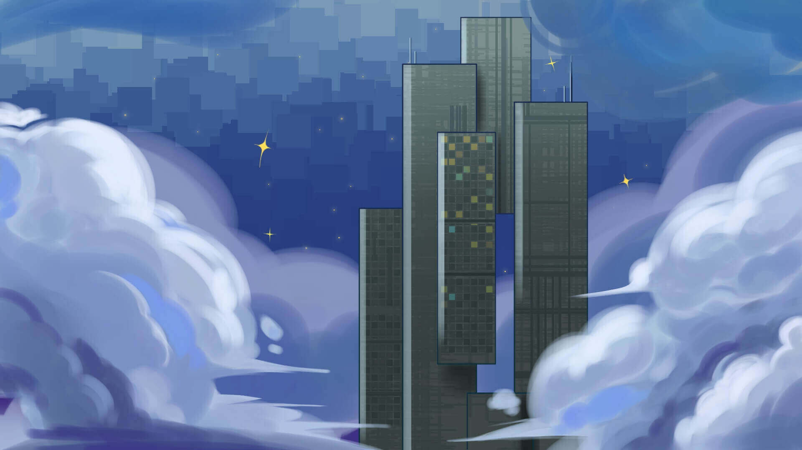
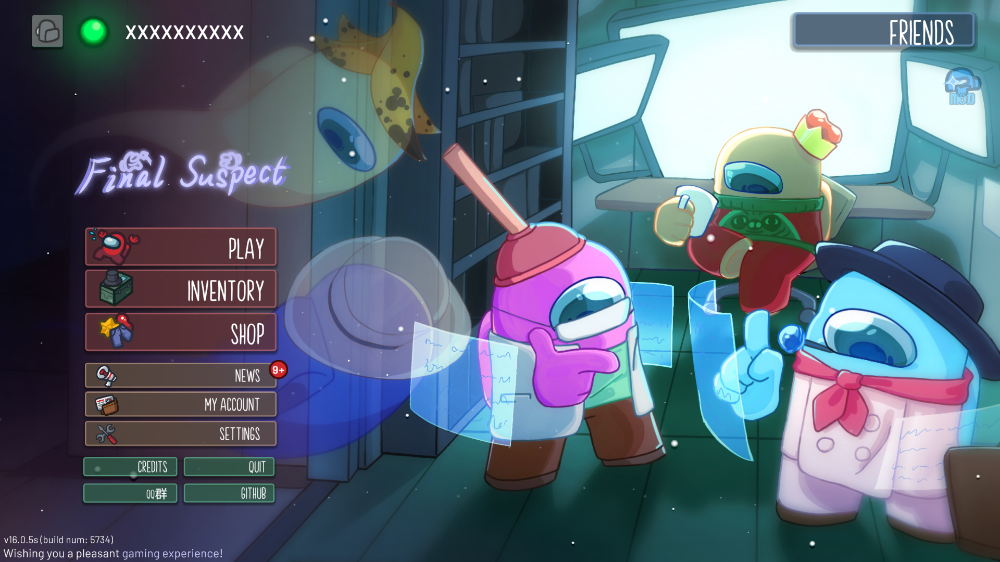
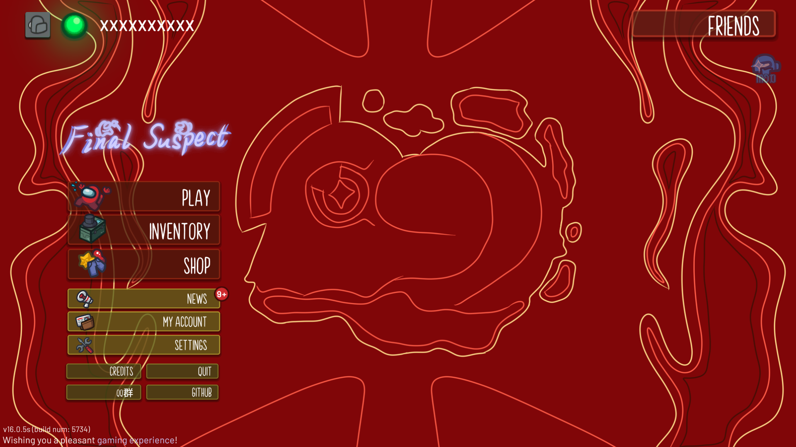
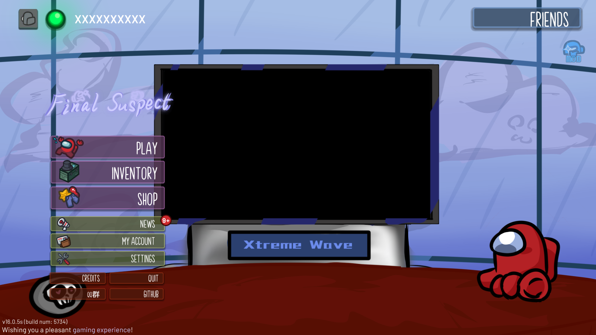
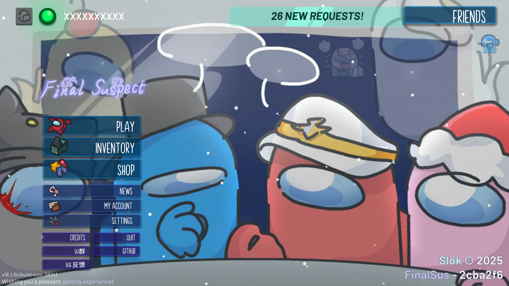

FinalSuspect
切换主页风格
在Final Suspect中，我们为玩家精心准备了6种风格各异的可切换背景，涵盖经典场景、节日限定和原创设计，为您的游戏体验增添更多个性化色彩：
-
逐光寻晓（FS经典背景）
随着时间的推移，北半球的冬天迎来尾声，春意正在各处复苏。
眺望米拉的雪景，内心中的回忆是否唤醒？暖流依旧心中流淌。
无论嫌疑最终落在谁身，无论真理最后破碎于谁手，在焕然一新的体验中，头脑风暴，留下全新的快乐回忆。作者：KpCam
-
赤心炽爱（TONEX经典背景）
我们不会就此跌下、不会就此放弃、不会让玩家失望、更不会停止进步。
若有人冷眼相待，我们会证明给所有人看！伴着热爱，我们再次起航。作者：KpCam
-
祉缘谐乐（新春特别节目）
祉，祝予福 缘，织于心，谐，连与情 乐，安喻人
挚缘，创谐乐 致远，谐得乐，至元，皆怀乐 只愿，人皆乐
愿每个人在新的一年都能寻得自己的道路，带着我们的祝福，勇往直前，追寻属于自己的人生吧！作者：小黄117
-
极致演播厅（新春特别节目）
——花开似浪，温柔如风，愿大家心海如风，事事如意
——春风浩荡，浪涌千里，愿大家勇立潮头，蒸蒸日上
——欢迎来到XtremeWave 极致狂澜——新春特别节目！作者：小黄117
-
XtremeWave 极致狂澜

「极行致远，梦领狂澜！」
作者：Slok
-
紧急会议！（TORE经典背景）
「谁是内鬼！？」
作者：AIGE
切换主页风格功能不影响游戏平衡，所有玩家均可自由选择喜欢的背景。